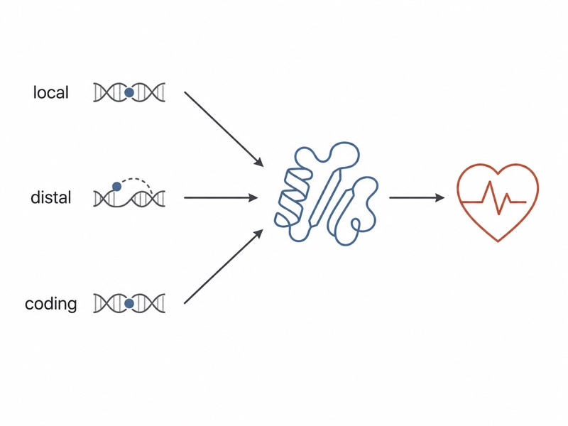

Linking protein variation to disease mechanisms
Until recently, our ability to jointly profile protein abundance and common and rare genetic variation at population scale was limited. My work uses these emerging data to connect genetics to proteins to disease by studying how local and distal genetic variation shapes protein abundance and how coding mutations alter protein function, to prioritize causal genes and disease mechanisms.
